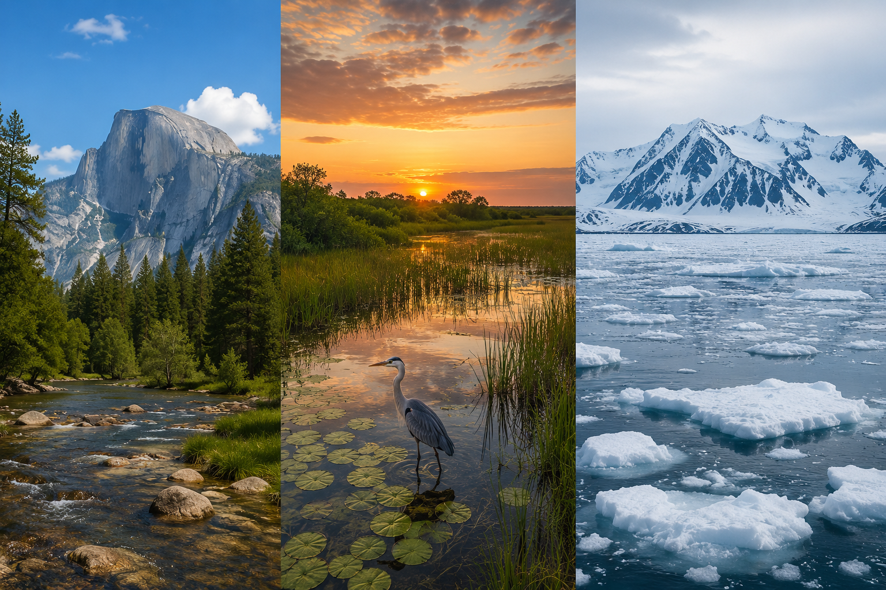
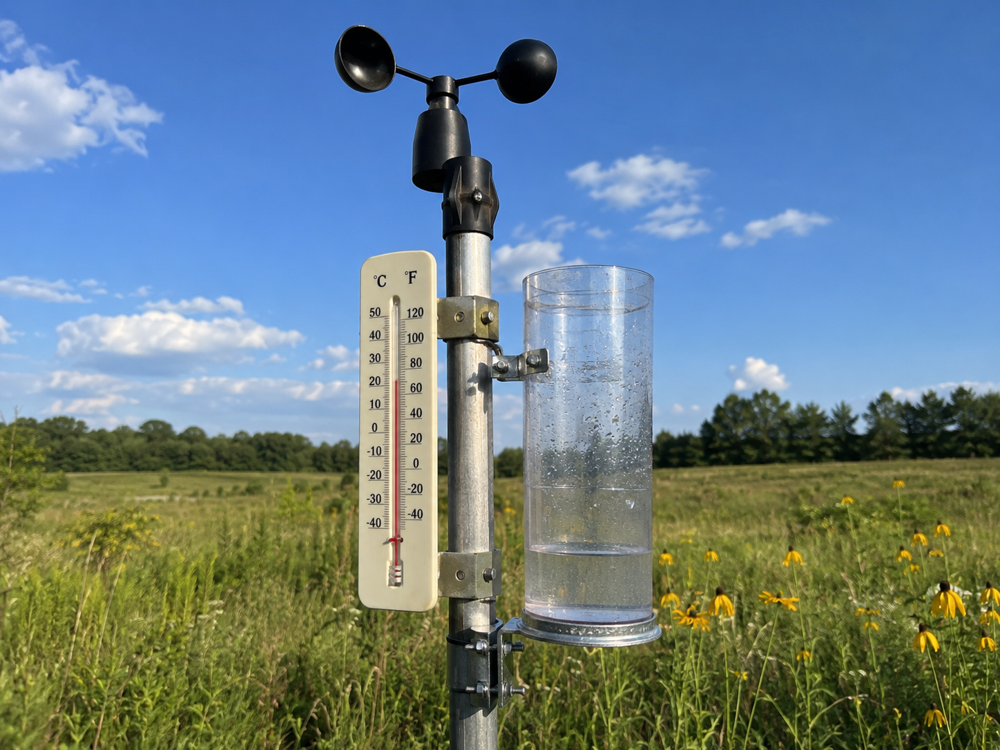
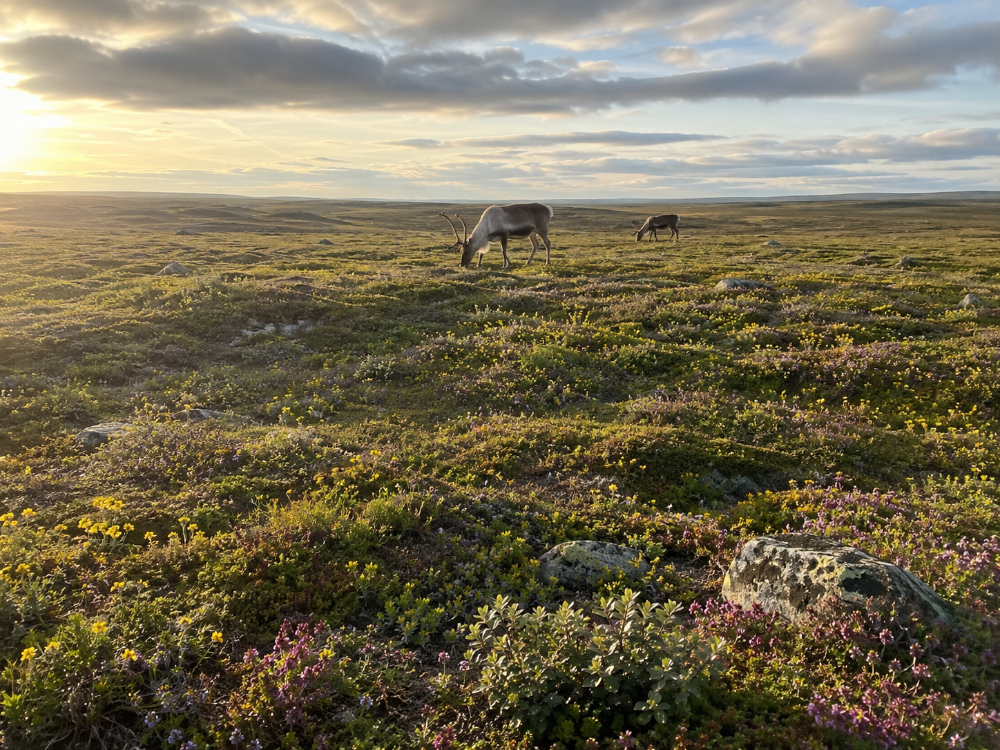
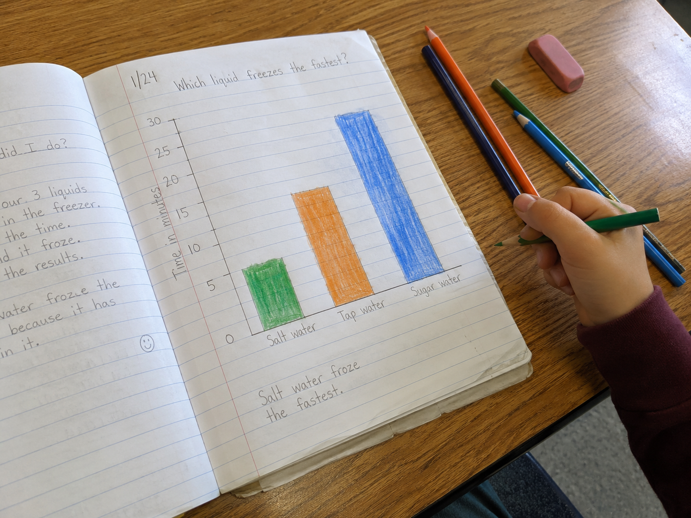

Keep this question in mind as you work through the investigation.
Start here. Learn the words you will use today.
Look at the three places in the banner above — mountains, a wetland, and ice. They're all real places in North America, but they look nothing alike. Take a minute to really look before we start reading anything.
Scientists start with observation, not answers. Whatever you notice is worth writing down — even if it seems obvious.
Key Vocabulary — tap each card to see the definition
Copy this sentence carefully into your science notebook:
"Scientists record climate data from many regions to find patterns and make predictions."
Now learn the main science idea.

Weatherweatherthe current conditions outside — temperature, rain, wind, clouds is what's happening outside right now. Climate is different — it's what the weather is usually like over many years.
One rainy day doesn't change a climate. But if a place gets a lot of rain every single year, that pattern is part of its climate.

Yosemite is a mountain park in California. Cool, snowy winters. Warm summers. Rocky peaks and pine forests.
The Everglades is a wetland in southern Florida. It stays warm all year and gets heavy rain. Grasses, mangroves, alligators, and wading birds fill its shallow waters.
The Arctic is far north. It's cold almost all year, with long dark winters and very little rainfall. Only a few tough organisms survive there.
Real-World Connection: The Everglades and Yosemite are both national parks, but they feel like different planets. That's what climate does — it shapes everything living in a place.

Climate describes the typical weather of a region over many years. Different regions have different climates — and those differences shape every living thing in that place.
Scientists use data — temperatures, rainfall amounts, and maps — to find patterns and compare climates.
Curious? Go Deeper
Scientists who study climate over long periods of time are called climatologists. They collect temperature and rainfall data for decades — sometimes centuries — before drawing conclusions.
One rainstorm doesn't change a climate. But a hundred years of measurements can reveal a pattern. That's what makes climate science different from a weather forecast.
Here's something interesting: the Everglades actually has two seasons — a wet season (May–October) and a dry season (November–April). Almost all of its 60 inches of rain fall during those six wet months. What do you think happens to the animals there when the dry season comes?
Now test the idea yourself.
You'll need: your science notebook, pencil, colored pencils, and a ruler. Use the climate data reference table below to fill in your chart.
📊 Climate Data Reference Table
| Region | Summer Temp | Winter Temp | Rainfall / yr |
|---|---|---|---|
| 🏔 Yosemite | 75°F | 34°F | 36 inches |
| 🌴 Everglades | 90°F | 68°F | 60 inches |
| ❄️ Arctic | 50°F | −10°F | 16 inches |
Work through each step in order. Record everything in your science notebook as you go.
Set up your chart. Draw a three-column chart in your notebook — one column for each region. Label the columns: Yosemite, Everglades, Arctic. Add rows for: summer temperature, winter temperature, annual rainfall, and one type of plant or animal.
Fill in the data. Use the reference table above to fill in each row of your chart. For plants and animals, use what you read in the Lesson tab — or think of one on your own that would fit that climate.
Make a bar graph. Choose one type of data — either rainfall or summer temperature. Draw a bar graph with three bars, one for each region. Label each bar, write a title, and add numbers on the side. Use colored pencils to color each bar differently.

Sketch a climate map. Draw a simple outline of North America. Mark a dot (or small label) for where each region is located — California for Yosemite, Florida for the Everglades, and northern Alaska for the Arctic. You don't need it to be exact, just in the right general area.
Write one pattern you notice. Look at your completed chart and graph. Write one sentence describing a pattern — something that stands out about how the three regions are different from each other.
Think about it: As you look back at your investigation, consider these prompts. You don't need to write these down — just think them through carefully.
Tell the story of your investigation — what you set up, what the data showed, and the most interesting thing you found. Use your chart and graph to help you explain it.
Think through each question on your own. Talk it through in your mind — or discuss with someone nearby.
Check what you understand.
Show what you learned.
🔍 Part A — Identify the Region
Use your chart and what you've learned. Write the name of the correct region in your notebook for each clue below.
🚀 Part B — Short Answer
Answer in complete sentences. Use your science vocabulary!
How does a region's climate affect the kinds of plants and animals that live there? Use evidence from the investigation to explain your thinking.
What do you think?
💡 Start with: "I think that climate affects living things because…"
What did you observe that supports your thinking?
💡 Start with: "I know this because when I looked at the data, I noticed that…"
Why does that connection make sense?
💡 Start with: "This shows that climate and living things are connected because…"
🎨 Part C — Draw and Label
Choose one of the three regions. Draw what it looks like and label at least 4 things: a temperature, a type of precipitation, one plant, and one animal.